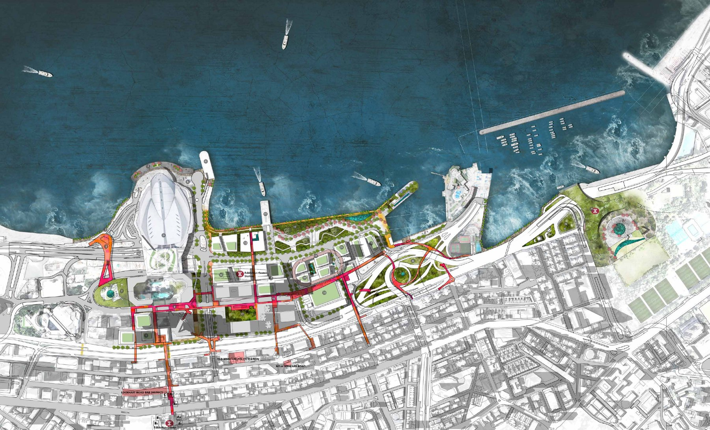
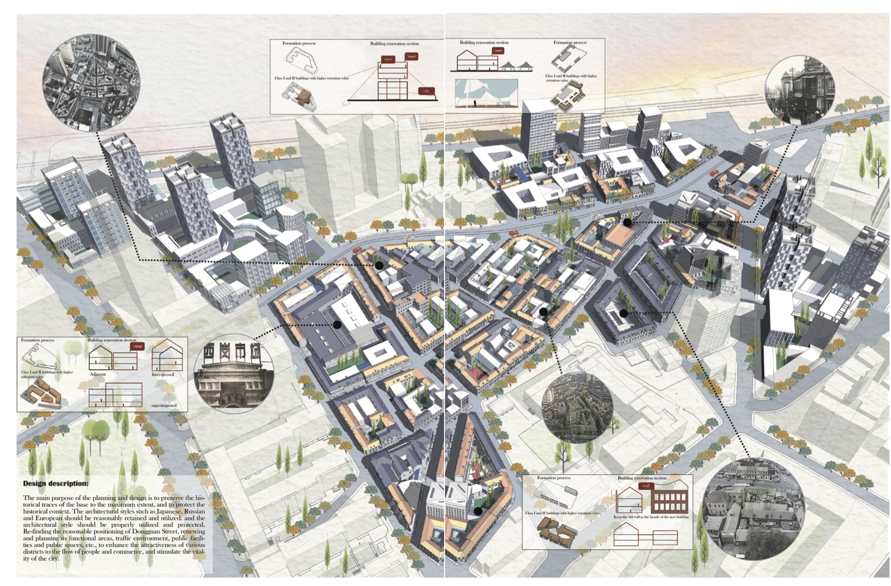
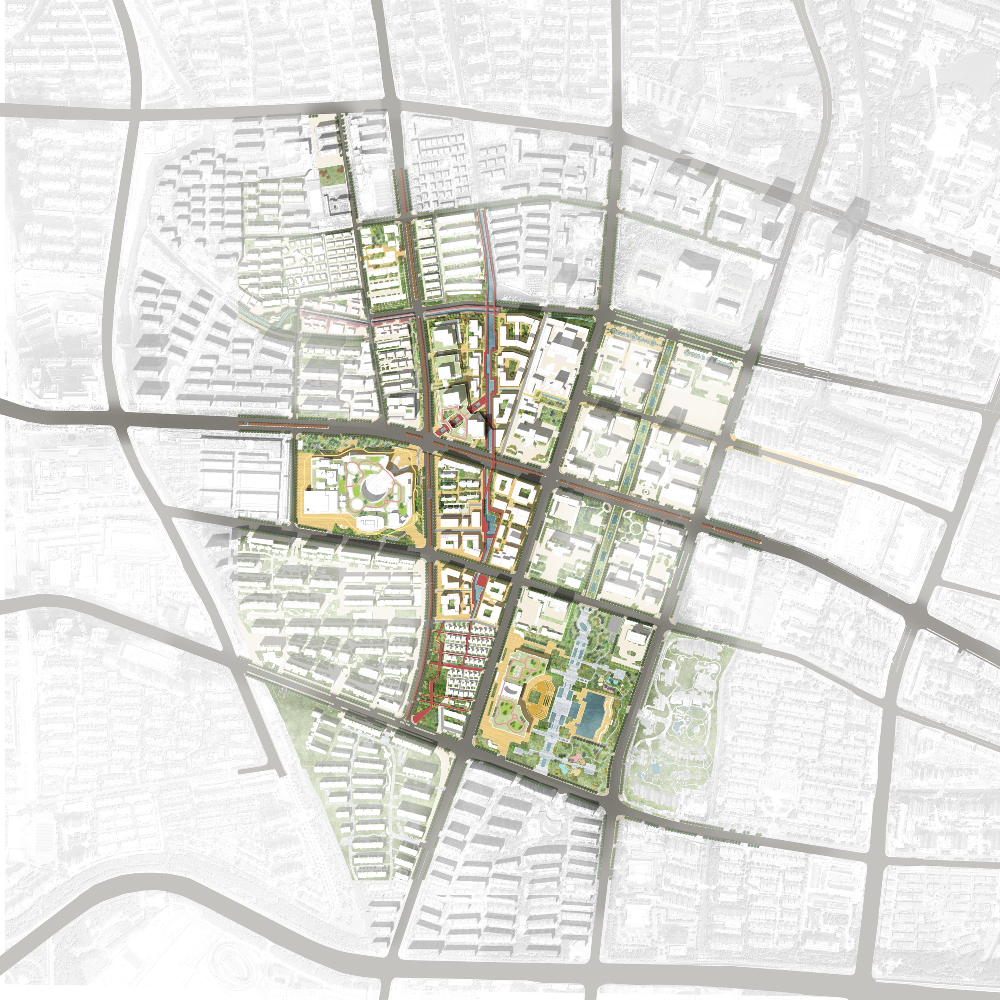
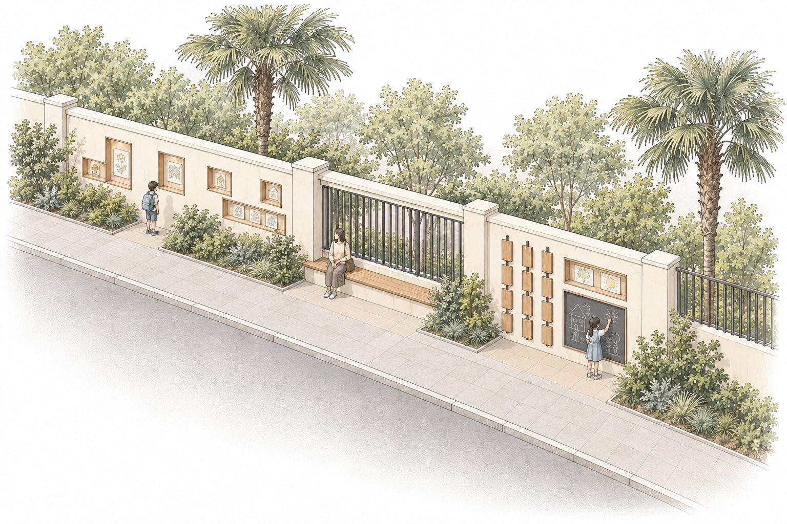

ACADEMIC & PROFESSIONAL WORK
Practice
Selected work in urban planning and design, from metropolitan structures to waterfronts, historic neighborhoods, and child-friendly streets.
SELECTED PROJECTS
 Longgang River River corridor planning / Collaborative urban design
Longgang River River corridor planning / Collaborative urban design

Waterfront Loops Waterfront urban design / Graduation design A Region of Cities Regional spatial planning
A Region of Cities Regional spatial planning

Dongguan Historic District Urban conservation & renewal / Academic studio
Beyond the Station Station-area urban design / Collaborative study
At a Child’s Pace Child-friendly streets / Collaborative study